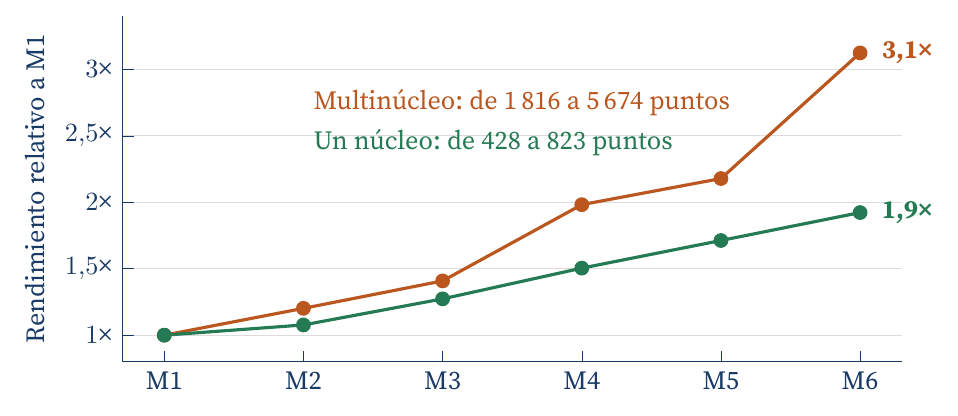
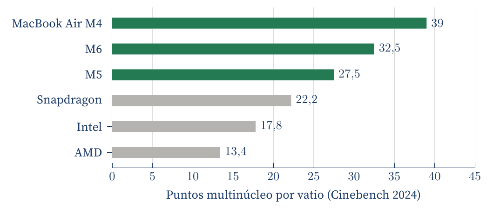

Cómo Apple Silicon cambió lo que una computadora puede hacer con cada vatio
Carlos Luis Rojas Aragonés
Este comentario resume un artículo que publiqué en mi blog (Rojas Aragonés, 2026), a partir de lo que estudié en este programa.
En junio de 2020 Apple anunció que el Mac dejaría los procesadores de Intel por chips propios (Apple, 2020a). El M1, de noviembre de ese año, integró CPU, GPU y aceleradores en un sistema en un chip, con memoria unificada en el mismo paquete (Apple, 2020b). La innovación no fue solo el procesador: Apple diseñó chip, sistema operativo y producto a la vez, y preparó la transición del software con Rosetta 2 y los binarios Universal 2. Aun así, el ecosistema tardó en ponerse al día: Docker Desktop no tuvo soporte estable hasta abril de 2021 (Docker, 2021).
El MacBook Air con M1 eliminó el ventilador y anunció hasta 18 horas de reproducción de video: el silencio dejó de depender de una carga ligera. Seis generaciones después, el rendimiento de un núcleo creció 1,9 veces y el multinúcleo 3,1 veces, en parte porque se pasó de 8 a 12 núcleos (Timm, 2026). Lo muestra la Figura 1.

Figura 1. Evolución de los chips base de Apple Silicon en Cinebench 2026.1, normalizada respecto a M1. Son agregados de la comunidad con configuraciones y refrigeración distintas, y M6 tiene una sola observación (Timm, 2026).
Lo más relevante, sin embargo, es el trabajo por vatio. En las pruebas de Notebookcheck (2026), que miden la potencia de todo el sistema, el M6 supera en eficiencia multinúcleo a los equipos de Intel, AMD y Qualcomm evaluados (Figura 2). No es invencible: el MacBook Air con M4 rinde más puntos por vatio y el Snapdragon X2 Elite Extreme logra más rendimiento multinúcleo absoluto.

Figura 2. Eficiencia multinúcleo de sistemas seleccionados, medida con la potencia de todo el equipo y una pantalla externa. No mide la duración de la batería (Notebookcheck, 2026).
La memoria unificada permite que la GPU use la misma memoria que la CPU, sin el límite de la VRAM de una tarjeta gráfica. Por eso hoy considero al Mac la mejor opción para desarrollar con modelos de lenguaje locales. La integración tiene un precio: la memoria se elige al comprar y no se puede ampliar, y Rosetta tendrá funciones limitadas a partir de macOS 28.
Apple afirma que el M6 ofrece hasta 2,4 veces el rendimiento multinúcleo del M1 (Apple, 2026), pero la lección no está en el número. A veces basta con cambiar una pieza; otras, el límite está en cómo trabajan juntas las piezas. Apple aceptó el costo de rediseñar esas relaciones y construyó un camino para que las aplicaciones la siguieran.
Apple. (2020a, 22 de junio). Apple announces Mac transition to Apple silicon. https://www.apple.com/newsroom/2020/06/apple-announces-mac-transition-to-apple-silicon/
Apple. (2020b, 10 de noviembre). Apple unleashes M1. https://www.apple.com/newsroom/2020/11/apple-unleashes-m1/
Apple. (2026, 25 de agosto). Apple introduces M6 and M5 Ultra for a big leap in performance and AI compute. https://www.apple.com/newsroom/2026/08/apple-introduces-m6-and-m5-ultra-for-a-big-leap-in-performance-and-ai-compute/
Docker. (2021, 15 de abril). Released: Docker Desktop for Mac [Apple silicon]. https://www.docker.com/blog/released-docker-desktop-for-mac-apple-silicon/
Notebookcheck. (2026). Apple M6 SoC analysis: Apple's 2 nm chip crushes AMD, Intel, Qualcomm. https://www.notebookcheck.net/Apple-M6-SoC-Analysis-Apple-s-2-nm-chip-crushes-AMD-Intel-Qualcomm.1404057.0.html
Rojas Aragonés, C. L. (2026, 21 de septiembre). From M1 to M6: The decision that made me rethink the Mac. https://crojasaragonez.github.io/blog/from-m1-to-m6-apple-silicon/
Timm, J.-F. (2026, 21 de septiembre). Apple M6 Benchmarks: So schnell ist er im Vergleich zu M5, M4, M3, M2 & M1. ComputerBase. https://www.computerbase.de/artikel/prozessoren/apple-m6-m5-m4-m3-m2-m1-benchmarks.99501/